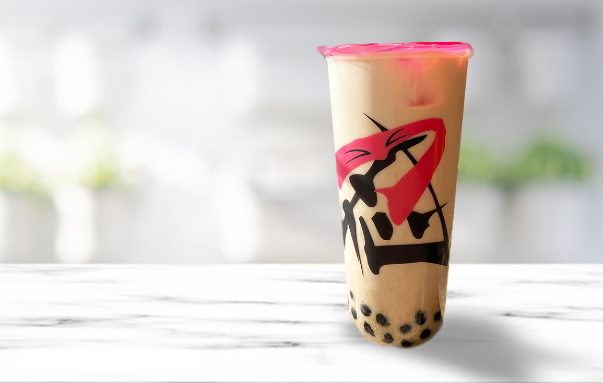

On this page, I've picked three of my favorite boba places and my three favorite items off of each menu. Enjoy!
In first place, we have ShareTea Ann Arbor.

#1 Thai Pearl Milk Tea

#2 Classic Pearl Black Milk Tea

#3 Hokkaido Pearl Milk Tea
Next up is Tea Ninja Ann Arbor.
#1 Brown Sugar Milk Tea
#2 Brown Sugar Crème Brûlée Milk Tea

#3 Rose Oolong Tea
Finally, I also love Quickly Ann Arbor.

#1 Tiger Milk Tea

#2 Brown Sugar Crème Brûlée Milk Tea
#3 Bonus: Taiwanese Popcorn Chicken and Curly Fries - great snacks at Quickly that pair well with their drinks!
Note: Images sourced from ShareTea, Tea Ninja and Quickly websites and social media pages.